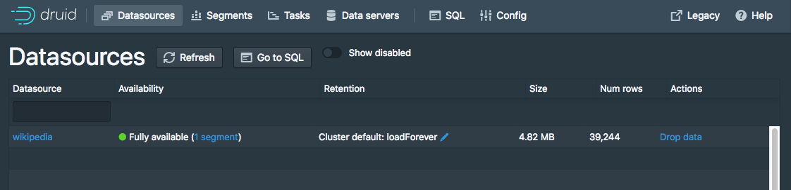

Table of Contents API documentation
This tutorial shows you how to load data files into Druid using a remote Hadoop cluster.
For this tutorial, we'll assume that you've already completed the previous batch ingestion tutorial using Druid's native batch ingestion system.
This tutorial requires Docker to be installed on the tutorial machine.
Once the Docker install is complete, please proceed to the next steps in the tutorial.
For this tutorial, we've provided a Dockerfile for a Hadoop 2.7.3 cluster, which we'll use to run the batch indexing task.
This Dockerfile and related files are located at examples/hadoop/docker.
From the druid package root, run the following commands to build a Docker image named "druid-hadoop-demo" with version tag "2.7.3":
cd examples/hadoop/docker
docker build -t druid-hadoop-demo:2.7.3 .
This will start building the Hadoop image. Once the image build is done, you should see the message Successfully tagged druid-hadoop-demo:2.7.3 printed to the console.
We'll need a shared folder between the host and the Hadoop container for transferring some files.
Let's create some folders under /tmp, we will use these later when starting the Hadoop container:
mkdir -p /tmp/shared
mkdir -p /tmp/shared/hadoop-xml
On the host machine, add the following entry to /etc/hosts:
127.0.0.1 druid-hadoop-demo
Once the /tmp/shared folder has been created and the etc/hosts entry has been added, run the following command to start the Hadoop container.
docker run -it -h druid-hadoop-demo -p 50010:50010 -p 50020:50020 -p 50075:50075 -p 50090:50090 -p 8020:8020 -p 10020:10020 -p 19888:19888 -p 8030:8030 -p 8031:8031 -p 8032:8032 -p 8033:8033 -p 8040:8040 -p 8042:8042 -p 8088:8088 -p 8443:8443 -p 2049:2049 -p 9000:9000 -p 49707:49707 -p 2122:2122 -p 34455:34455 -v /tmp/shared:/shared druid-hadoop-demo:2.7.3 /etc/bootstrap.sh -bash
Once the container is started, your terminal will attach to a bash shell running inside the container:
Starting sshd: [ OK ]
18/07/26 17:27:15 WARN util.NativeCodeLoader: Unable to load native-hadoop library for your platform... using builtin-java classes where applicable
Starting namenodes on [druid-hadoop-demo]
druid-hadoop-demo: starting namenode, logging to /usr/local/hadoop/logs/hadoop-root-namenode-druid-hadoop-demo.out
localhost: starting datanode, logging to /usr/local/hadoop/logs/hadoop-root-datanode-druid-hadoop-demo.out
Starting secondary namenodes [0.0.0.0]
0.0.0.0: starting secondarynamenode, logging to /usr/local/hadoop/logs/hadoop-root-secondarynamenode-druid-hadoop-demo.out
18/07/26 17:27:31 WARN util.NativeCodeLoader: Unable to load native-hadoop library for your platform... using builtin-java classes where applicable
starting yarn daemons
starting resourcemanager, logging to /usr/local/hadoop/logs/yarn--resourcemanager-druid-hadoop-demo.out
localhost: starting nodemanager, logging to /usr/local/hadoop/logs/yarn-root-nodemanager-druid-hadoop-demo.out
starting historyserver, logging to /usr/local/hadoop/logs/mapred--historyserver-druid-hadoop-demo.out
bash-4.1#
The Unable to load native-hadoop library for your platform... using builtin-java classes where applicable warning messages can be safely ignored.
From the druid package root on the host, copy the quickstart/wikiticker-2015-09-12-sampled.json.gz sample data to the shared folder:
cp quickstart/wikiticker-2015-09-12-sampled.json.gz /tmp/shared/wikiticker-2015-09-12-sampled.json.gz
In the Hadoop container's shell, run the following commands to setup the HDFS directories needed by this tutorial and copy the input data to HDFS.
cd /usr/local/hadoop/bin
./hadoop fs -mkdir /druid
./hadoop fs -mkdir /druid/segments
./hadoop fs -mkdir /quickstart
./hadoop fs -chmod 777 /druid
./hadoop fs -chmod 777 /druid/segments
./hadoop fs -chmod 777 /quickstart
./hadoop fs -chmod -R 777 /tmp
./hadoop fs -chmod -R 777 /user
./hadoop fs -put /shared/wikiticker-2015-09-12-sampled.json.gz /quickstart/wikiticker-2015-09-12-sampled.json.gz
If you encounter namenode errors such as mkdir: Cannot create directory /druid. Name node is in safe mode. when running this command, the Hadoop container is not finished initializing. When this occurs, wait a couple of minutes and retry the commands.
Some additional steps are needed to configure the Druid cluster for Hadoop batch indexing.
From the Hadoop container's shell, run the following command to copy the Hadoop .xml configuration files to the shared folder:
cp /usr/local/hadoop/etc/hadoop/*.xml /shared/hadoop-xml
From the host machine, run the following, where {PATH_TO_DRUID} is replaced by the path to the Druid package.
cp /tmp/shared/hadoop-xml/*.xml {PATH_TO_DRUID}/examples/conf/druid/_common/hadoop-xml/
In your favorite text editor, open examples/conf/druid/_common/common.runtime.properties, and make the following edits:
#
# Deep storage
#
# For local disk (only viable in a cluster if this is a network mount):
#druid.storage.type=local
#druid.storage.storageDirectory=var/druid/segments
# For HDFS:
druid.storage.type=hdfs
druid.storage.storageDirectory=/druid/segments
#
# Indexing service logs
#
# For local disk (only viable in a cluster if this is a network mount):
#druid.indexer.logs.type=file
#druid.indexer.logs.directory=var/druid/indexing-logs
# For HDFS:
druid.indexer.logs.type=hdfs
druid.indexer.logs.directory=/druid/indexing-logs
Once the Hadoop .xml files have been copied to the Druid cluster and the segment/log storage configuration has been updated to use HDFS, the Druid cluster needs to be restarted for the new configurations to take effect.
If the cluster is still running, CTRL-C to terminate each Druid service, and re-run them.
We've included a sample of Wikipedia edits from September 12, 2015 to get you started.
To load this data into Druid, you can submit an ingestion task pointing to the file. We've included
a task that loads the wikiticker-2015-09-12-sampled.json.gz file included in the archive. To submit
this task, POST it to Druid in a new terminal window from the druid-0.12.2 directory:
curl -X 'POST' -H 'Content-Type:application/json' -d @examples/wikipedia-index-hadoop.json http://localhost:8090/druid/indexer/v1/task
Which will print the ID of the task if the submission was successful:
{"task":"index_hadoop_wikipedia-hadoop_2018-06-09T21:30:32.802Z"}
To view the status of your ingestion task, go to your overlord console: http://localhost:8090/console.html. You can refresh the console periodically, and after the task is successful, you should see a "SUCCESS" status for the task.
After your ingestion task finishes, the data will be loaded by historical nodes and be available for querying within a minute or two. You can monitor the progress of loading your data in the coordinator console, by checking whether there is a datasource "wikipedia" with a blue circle indicating "fully available": http://localhost:8081/#/.

Your data should become fully available within a minute or two after the task completes. You can monitor this process on your Coordinator console at http://localhost:8081/#/.
Please follow the query tutorial to run some example queries on the newly loaded data.
This tutorial is only meant to be used together with the query tutorial.
If you wish to go through any of the other tutorials, you will need to:
* Shut down the cluster and reset the cluster state by following the reset instructions.
* Revert the deep storage and task storage config back to local types in examples/conf/druid/_common/common.runtime.properties
* Restart the cluster
This is necessary because the other ingestion tutorials will write to the same "wikipedia" datasource, and later tutorials expect the cluster to use local deep storage.
Example reverted config:
#
# Deep storage
#
# For local disk (only viable in a cluster if this is a network mount):
druid.storage.type=local
druid.storage.storageDirectory=var/druid/segments
# For HDFS:
#druid.storage.type=hdfs
#druid.storage.storageDirectory=/druid/segments
#
# Indexing service logs
#
# For local disk (only viable in a cluster if this is a network mount):
druid.indexer.logs.type=file
druid.indexer.logs.directory=var/druid/indexing-logs
# For HDFS:
#druid.indexer.logs.type=hdfs
#druid.indexer.logs.directory=/druid/indexing-logs
For more information on loading batch data with Hadoop, please see the Hadoop batch ingestion documentation.